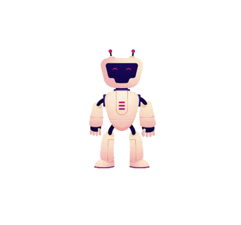

Эта викторина поможет вам проверить свои знания о проблеме самоповреждения и узнать, как распознать опасный контент в интернете, чтобы защитить себя и своих близких. Распространение информации о самоповреждении и призывы к опасным действиям — одна из скрытых угроз цифрового мира, с которой может столкнуться человек любого возраста, но наиболее уязвимы здесь подростки, ищущие поддержку или способы справиться с болью. В отличие от реальной жизни, где необычное поведение может заметить учитель или друг, в интернете ребенок часто остается один на один с депрессивным контентом, который маскируется под «искренность», «понимание» и «эстетику боли», проникая в сознание через паблики, хештеги и рекомендации алгоритмов.
Это не просто «страшные картинки» или «грустные стихи», а опасный контент, включающий не только прямые призывы к действию, но и более тонкие формы: романтизация самоповреждения, изображение порезов как способа справиться с эмоциями, распространение инструкций и оправдание опасного поведения как «нормы». Это не «крик о помощи», а реальный риск, требующий немедленной реакции и вмешательства взрослых. Борьба с этим лежит в плоскости воспитания эмоционального интеллекта, развития критического мышления и создания безопасной среды, где подросток не побоится обратиться за реальной помощью к психологу или близким, вместо того чтобы искать опасные «лекарства» в сети.
Пройди короткий тест, чтобы понять, насколько хорошо ты знаешь об этой теме.

Подсказка появится здесь